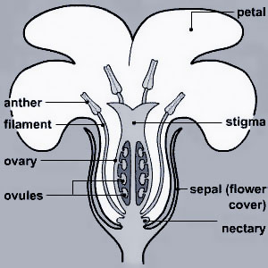

Flower Anatomy & Function
There is an incredible variety of floral shapes in nature, but they are all derived from the same basic structure.

All plant reproduction requires that pollen be transmitted to the stigma. (The exception is agamospermy, in which ovules produce viable seed without being fertilized.) Flowers may have male or female organs (called imperfect flowers), or both (hermaphrodite, referred to as perfect flowers).
These terms should not be confused with those that describe the plant as whole. A particular species may have individual plants that are produce either male or female flowers (dioecious, from the Greek for 'two houses', in that the male and female functions are found in separate plants), or hermaphrodite (monoecious, 'one house'). In those species that are monoecious, individual plants may have their male and female functions in separate (imperfect) flowers, in perfect flowers, or they may have two or even all three of the flower types. Monoecious plants may also have sexual functions separated in time. This means that the pollen production and pollen receptivity occur at different times.
Inbreeding (self-fertilization or fertilization by close relatives) can reduce the vigour and health of living things. An inbred plant may perform poorly and leave fewer offspring. In a crop plant, this may mean lower yields. While plants do not suffer as rapidly or severely from inbreeding as animals do, most have ways to reduce or eliminate the possibility of self-fertilization. Self-fertilization is usually only a "back-up" mechanism in case cross-pollination does not occur. The most effective way to ensure cross-fertilization is to be dioecious, but these plants have no alternative in the event that cross pollen is limited.
There are many different ways that plants avoid self-fertilization. These include physical separation of male and female flower parts on the plant, or staggering the fertility of male and female flowers over time. Some plants may “chemically” prevent self-fertilization by preventing germination of its own pollen on the stigma..
__